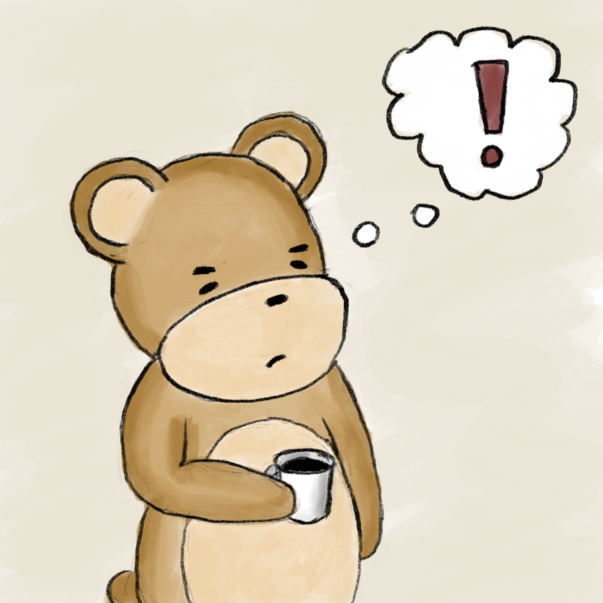
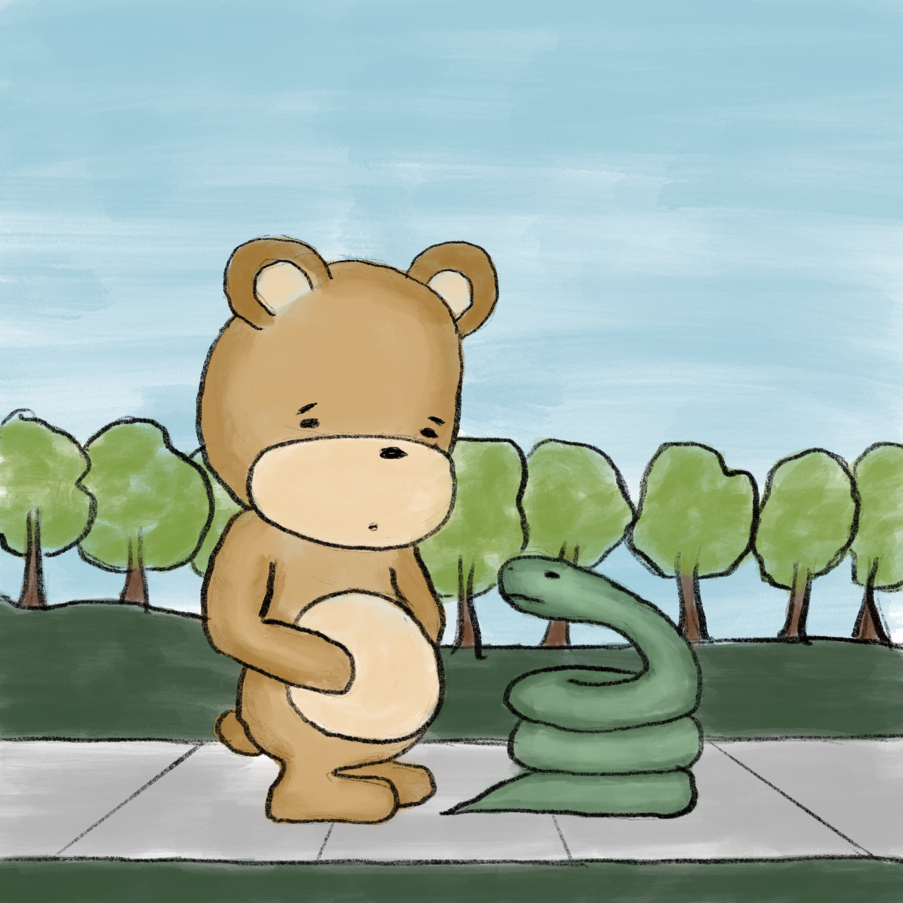
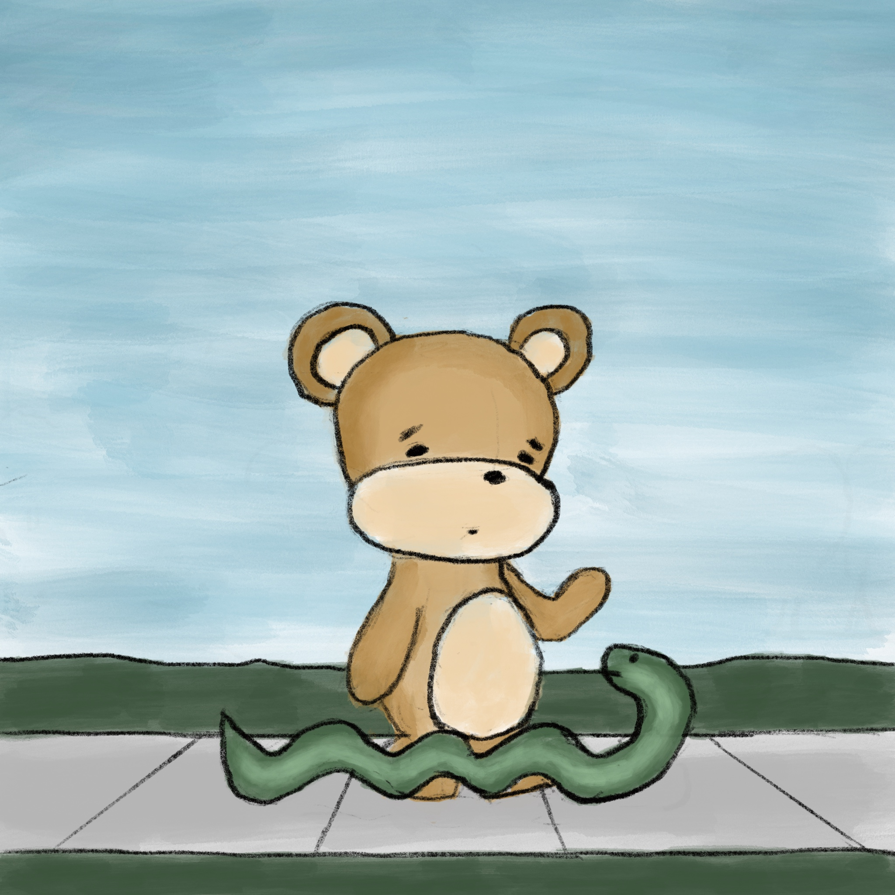

The next morning the bear woke up with astringent cup of coffee and a sense of conviction. “I’m not going to just mope around the house today. I’m going to call my friend Jasper and head out to the social meadow. I think I might find some answers there. Haarrumph!” He harrumphed. #82

“Thanks for meeting up with me, Jasper,” the bear said, glad to see his old friend. “Would you join me for a walk through the social meadow?” Jasper quietly nodded in agreement and they were on their way. #83

“Why the social meadow, bear?” Jasper asked as they neared the entrance. “Well,” The bear replied, “I feel like it’s a good way to stay connected to my friends.” Jasper looked skeptical but stayed silent. #84